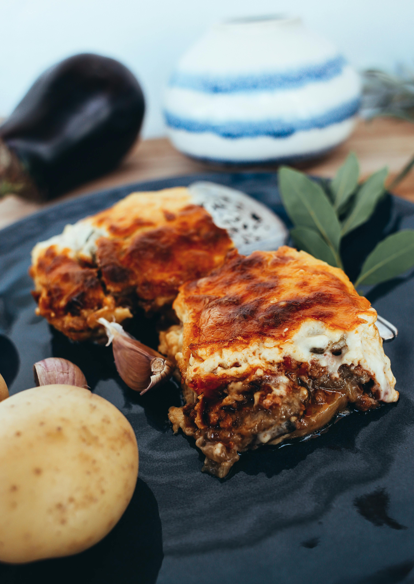

Lasagna

Description
Lasagna is a delicious Italian dish with layers of pasta, rich meat or vegetable sauce, and creamy cheese, all baked to perfection. It’s hearty, comforting, and packed with flavor.
Ingredient
- 12 lasagna noodles
- 450g ground beef
- 1 onion, chopped
- 3 garlic cloves, minced
- 800g crushed tomatoes
- 425g ricotta cheese
- 300g mozzarella, shredded
- 75g Parmesan, grated
- 1 egg
- 30ml olive oil
Steps
- noodles: Boil lasagna noodles, then drain and set aside.
- meat sauce: Sauté onion and garlic in olive oil. Add ground beef and cook until browned. Stir in crushed tomatoes, basil, oregano, salt, and pepper. Simmer for 15-20 minutes.
- Prepare cheese mixture: Combine ricotta, egg, half the mozzarella, and half the Parmesan.
- Assemble lasagna: Layer sauce, noodles, and cheese mixture in a baking dish. Repeat layers, ending with sauce.
- Top and bake: Sprinkle with remaining mozzarella and Parmesan. Cover with foil and bake at 375°F (190°C) for 25 minutes. Uncover and bake for an additional 25 minutes, until golden and bubbly.
- Rest and serve: Let it rest for 10 minutes before serving.